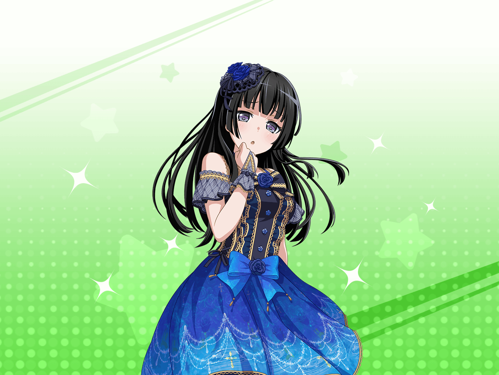

駅前
燐子
……あ、{{userName}}さん。
こ……こんにちは……
燐子
……は、はい……今は……練習の、帰り……です
燐子
……え、ええ……氷川さんも、もちろん……来てましたよ
燐子
……は、はい。
あこちゃんとも……話すんですけど……
燐子
最近の、氷川さんの、演奏は……すごい、です
燐子
……えっと……何ていうか……は、迫力を……感じます……
燐子
氷川さんの、ギターは、淡々とした……
一定の、テンポなんです、けど……
燐子
その、一定のテンポが……わたしとしては……
胸に迫る……というか……
燐子
ラヴェルの……『ボレロ』という、曲……知ってます、か？
燐子
は、はい……く、クラシックの、名曲……です
燐子
リズムセクションが……
ずっと一定のリズムを……刻み続けるんです、けど……
燐子
そ、その……繰り返しの、モチーフが……
徐々に……迫力を……増していくんです……
燐子
一定のリズムを……刻み続けるのに、必要なのは……
燐子
技術よりも、むしろ……精神力……だと、思います
燐子
わ、わたしは……氷川さんの……ギターに……
燐子
強い、精神力を……感じます……
燐子
特に……最近の氷川さんの、演奏には……
強い、精神力を、感じます……
燐子
何があったら……あんなに力強い音が出せるのか……
どんな変化が……あったんでしょうか……？
燐子
……わたしも、あんな音が……
出せるように……なりたい……です……
燐子
あ……す、すみません……
わたしばっかり……話してしまいました……
燐子
お話、聞いてくださって……
あ、ありがとう……ございました……
そ、それでは……し、失礼します……っ